Code
library(ggplot2) #绘图
library(dplyr) #数据分析
library(RColorBrewer) #调用调色板library(ggplot2) #绘图
library(dplyr) #数据分析
library(RColorBrewer) #调用调色板library(ggplot2)
mytheme <- theme(
text = element_text(size = 16,
family = "STKaiti"),
axis.title = element_text(size = 20)
)(1)生成序列10,30,50,70,…,210
seq(10,210,20) [1] 10 30 50 70 90 110 130 150 170 190 210(2)生成序列1,8,27,64,…,1000
seq(1,10)^3 [1] 1 8 27 64 125 216 343 512 729 1000(3)构造如下所示2╳3矩阵mat,并设置行名和列名，打印输出该矩阵。
| 数学 | 语文 | 英语 | |
|---|---|---|---|
| 张三 | 90 | 85 | 92 |
| 李四 | 88 | 90 | 87 |
data <- c(90,85,92,88,90,87)
mat <- matrix(data,nrow = 2,ncol = 3,byrow = TRUE,
dimnames = list(
c("张三","李四"),
c("语文","数学","英语")
))
mat 语文 数学 英语
张三 90 85 92
李四 88 90 87(4)打印输出第(3)小题中mat矩阵中张三同学的语文成绩。
cat("张三同学的语文成绩为",mat[1,2],"分")张三同学的语文成绩为 85 分2.创建数据框sales模拟某大型连锁超市的商品信息,并完成以下操作。
(1)创建表征商品信息的数据框sales，数据如下。商品名称(Product）: “洗发水”, “沐浴乳”, “薯片”, “话梅”，商品品类（Category）: “日用品”, “日用品”, “零食”, “零食”，价格（Price）: 70, 89, 7, 4。
# 创建数据框sales
sales <- data.frame(
Product = c("洗发水", "沐浴乳", "薯片", "话梅"),
Category = c("日用品", "日用品", "零食", "零食"),
Price = c(70, 89, 7, 4)
)(2)向数据框中添加一个新列库存(stock)，并填入以下数据：100,30,1000,40。
# 添加新列库存
sales$stock <- c(100, 30, 1000, 40)(3)将商品品类（Category）列转换为因子，并查看因子水平。
# 将Category列转换为因子
sales$Category <- as.factor(sales$Category)
# 查看因子水平
levels(sales$Category)[1] "日用品" "零食" (4)筛选价格(Price)大于50的商品的商品名称并输出。
# 筛选价格大于50的商品
high_price_products <- sales %>%
dplyr::filter(Price>50) %>%
select(Product)
# 输出筛选结果
high_price_products Product
1 洗发水
2 沐浴乳3.请使用rnorm() 函数生成正态分布随机数模拟餐厅每日营业额并完成以下操作。 (1)设置随机种子数为2024，使用rnorm函数生成一个长度为25的向量，模拟某餐厅25天的每日营业额，均值为5000，标准差为1300。
# (1) 生成餐厅每日营业额向量
set.seed(2024)
daily_revenue <- rnorm(25, mean = 5000, sd = 1300)(2)计算该餐厅营业额25天内营业额的最大值、最小值和25天的营业额总和。
# (2) 计算营业额的最大值、最小值和25天的营业额总和
max_revenue <- max(daily_revenue)
min_revenue <- min(daily_revenue)
total_revenue <- sum(daily_revenue)
cat("营业额最大值:", max_revenue, "\n")
## 营业额最大值: 6680.061
cat("营业额最小值:", min_revenue, "\n")
## 营业额最小值: 743.4284
cat("25天的营业额总和:", total_revenue, "\n")
## 25天的营业额总和: 120749.9(3)生成该餐厅营业额的频数分布表并输出对应营业额区间的频数百分比，区间分段节点分别为0,2000,4000,6000,8000。
# (3) 生成营业额的频数分布表并输出对应营业额区间的频数百分比
library(DescTools)
revenue_intervals <- Freq(daily_revenue, breaks = c(0,2000,4000,6000,8000))
revenue_intervals
colnames(revenue_intervals)[1:3] <- c("分组","频数","频数百分比")
revenue_intervals[,1:3]revenue_intervals <- cut(daily_revenue, breaks = c(0,2000,4000,6000,8000))
revenue_F <- as.data.frame(table(revenue_intervals))
revenue_F$perc <- revenue_F$Freq/sum(revenue_F$Freq)*100
colnames(revenue_F) <- c("分组","频数","频数百分比")
revenue_F 分组 频数 频数百分比
1 (0,2e+03] 1 4
2 (2e+03,4e+03] 6 24
3 (4e+03,6e+03] 12 48
4 (6e+03,8e+03] 6 24load("../Output/data(2024-2025-1A).RData")ggplot(Titanic_df,aes(x=Class))+
geom_bar()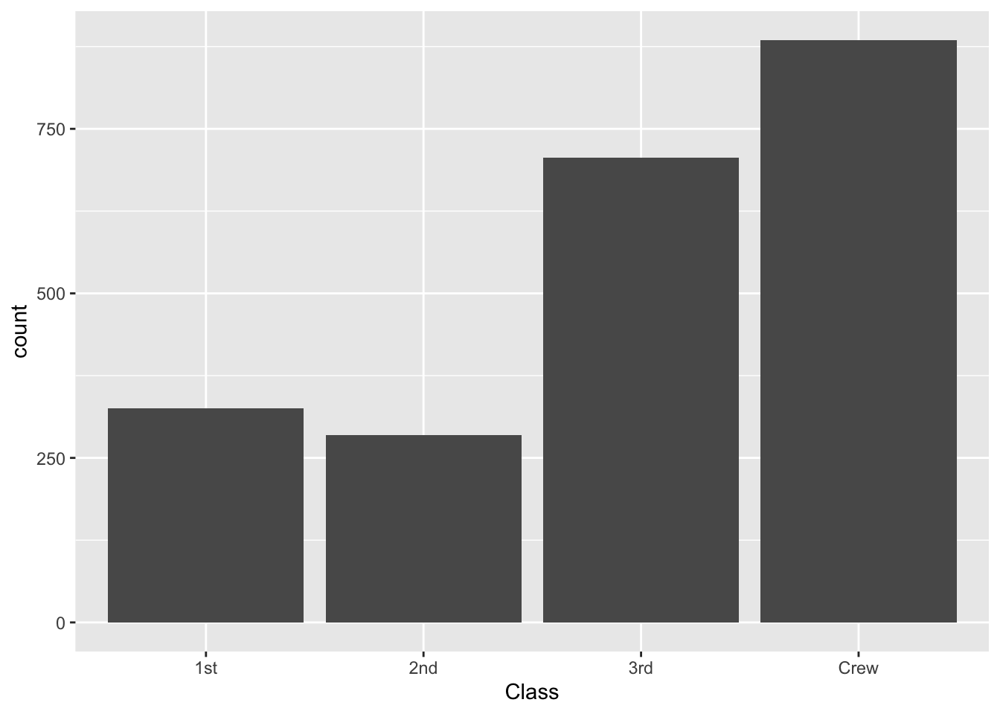
library(RColorBrewer)
ggplot(Titanic_df,aes(x=Class,fill = Class))+
geom_bar()+
scale_fill_brewer(palette = "Spectral")+
labs(y="人数",
title = "泰坦尼克号沉船事件不同船舱等级人数信息")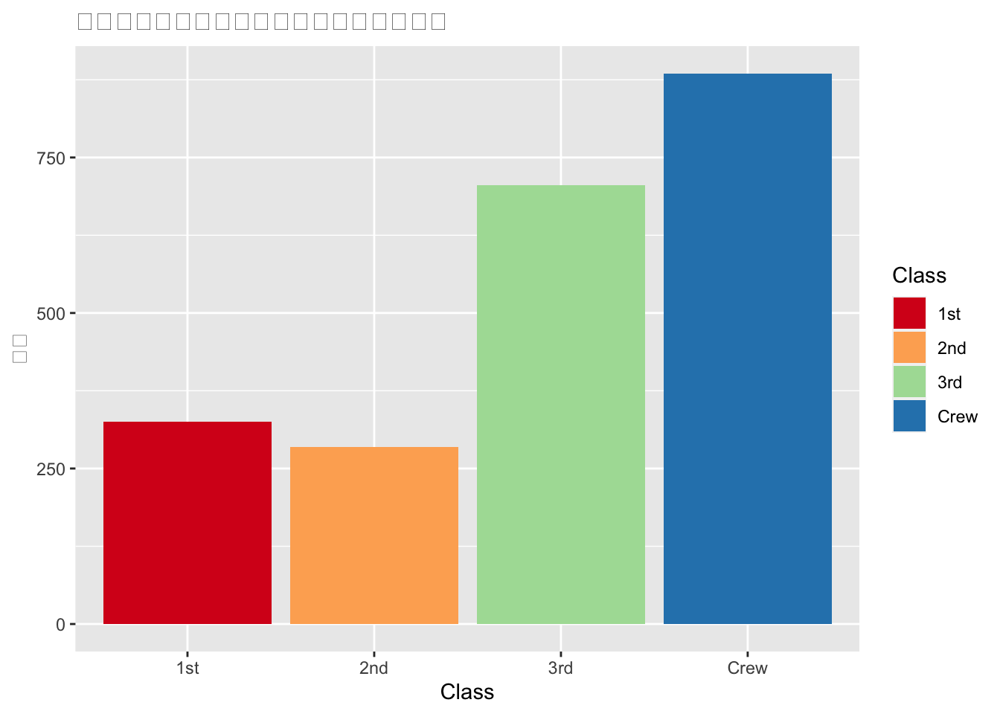
library(RColorBrewer)
ggplot(Titanic_df,aes(x=Class,fill = Survived))+
geom_bar(position = "dodge")+
labs(y="人数",
title = "泰坦尼克号沉船事件不同船舱等级人数信息")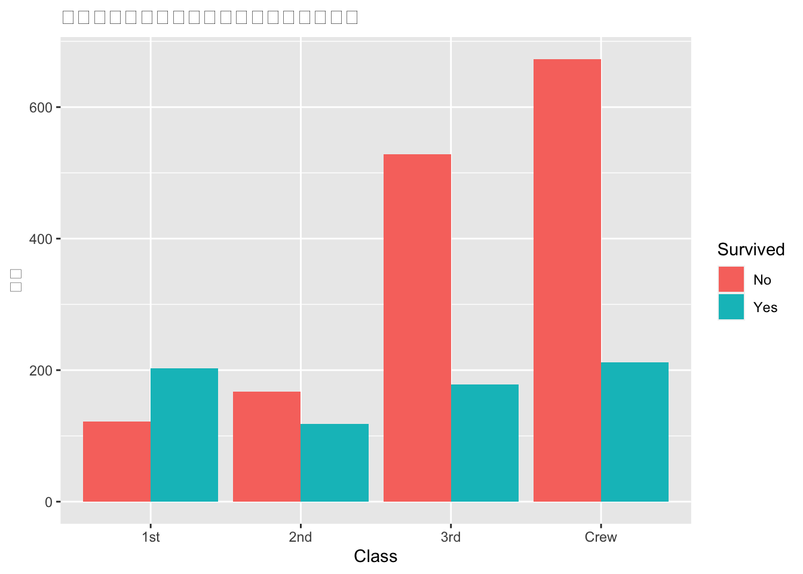
library(ggiraphExtra)
ggPie(Titanic_df,aes(pies=Class))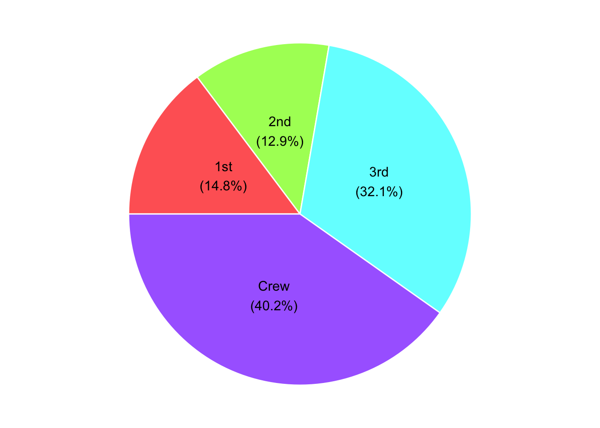
p1 <- ggplot(Titanic_df,aes(x=Class))+
geom_bar()+
labs(title = "1.(1)")
p2 <- ggplot(Titanic_df,aes(x=Class,fill = Class))+
geom_bar()+
scale_fill_brewer(palette = "Spectral")+
labs(y="人数",
title = "1.(2)",
subtitle = "泰坦尼克号沉船事件不同船舱等级人数信息")
p3 <- ggplot(Titanic_df,aes(x=Class,fill = Survived))+
geom_bar(position = "dodge")+
labs(y="人数",
title = "1.(3)",
subtitle = "泰坦尼克号沉船事件不同船舱等级人数信息")
p4 <- ggPie(Titanic_df,aes(pies=Class))+
ggtitle("1.(4)")
gridExtra::grid.arrange(p1,p2,p3,p4,
ncol=2)Tianic沉船事件
ggplot(Titanic_df,aes(x=Class))+
geom_bar()
ggplot(Titanic_df,aes(x=Class))+
geom_bar()
ggplot(Titanic_df,aes(x=Class))+
geom_bar()
ggplot(Titanic_df,aes(x=Class))+
geom_bar()
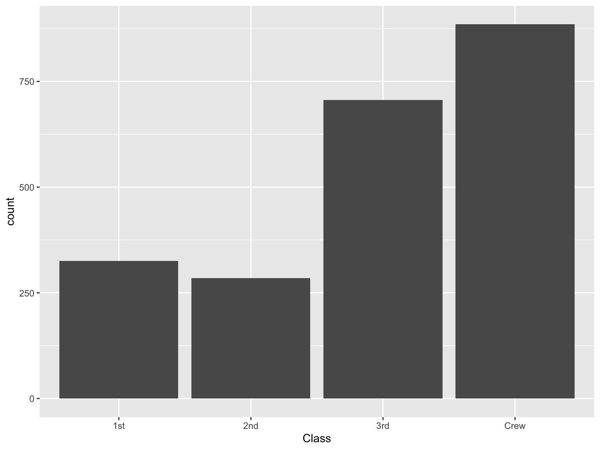


根据data(A).RDada加载的USArrests数据集绘制以下图形，该数据集是一个包含了美国各州的暴力犯罪数据的数据集，包括谋杀、强奸、抢劫和袭击等指标,可用于研究不同州之间的暴力犯罪情况和特点, 该数据集包含了50个州的数据，共计4个变量，包括：Murder：谋杀率（每10万人口）, Assault：攻击率（每10万人口）, UrbanPop：城市人口占比, Rape：强奸率（每10万人口）。
ggplot(USArrests,aes(x=Murder))+
geom_histogram(bins = 20,fill="deepskyblue",color="black")+
labs(y="频数")+
mytheme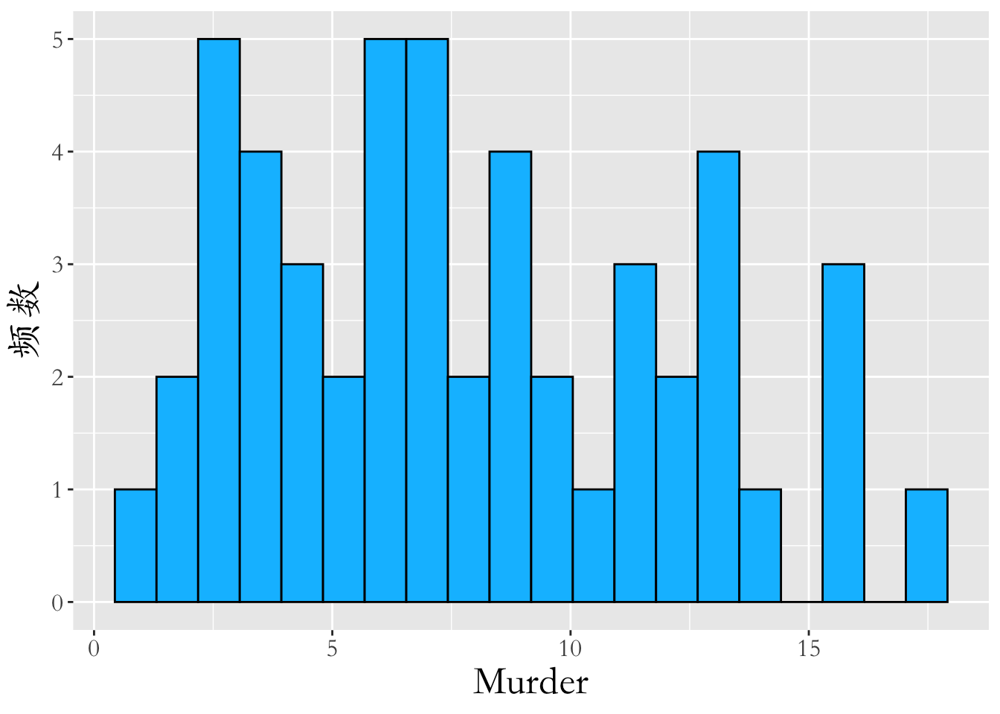
library(corrplot)
r <- cor(USArrests)
corrplot(r,method = "color")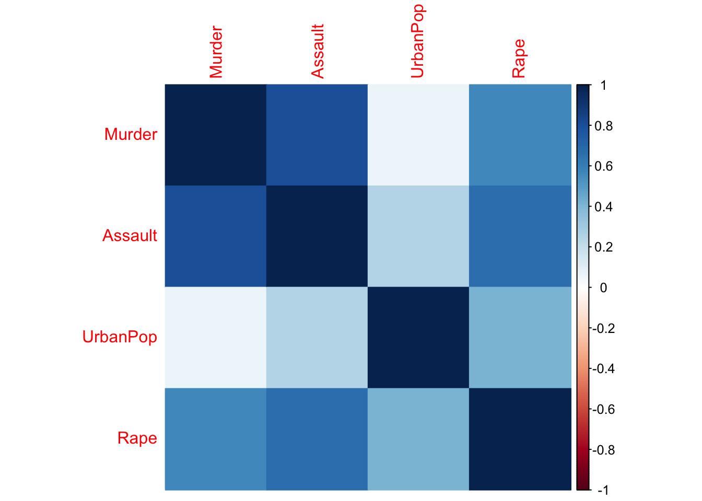
library(ggplot2)
ggplot(USArrests, aes(x = Murder, y = Assault)) +
geom_point() +
labs(title = "谋杀率与攻击率的关系",
x = "谋杀率 (每 10 万人)",
y = "攻击率 (每 10 万人)")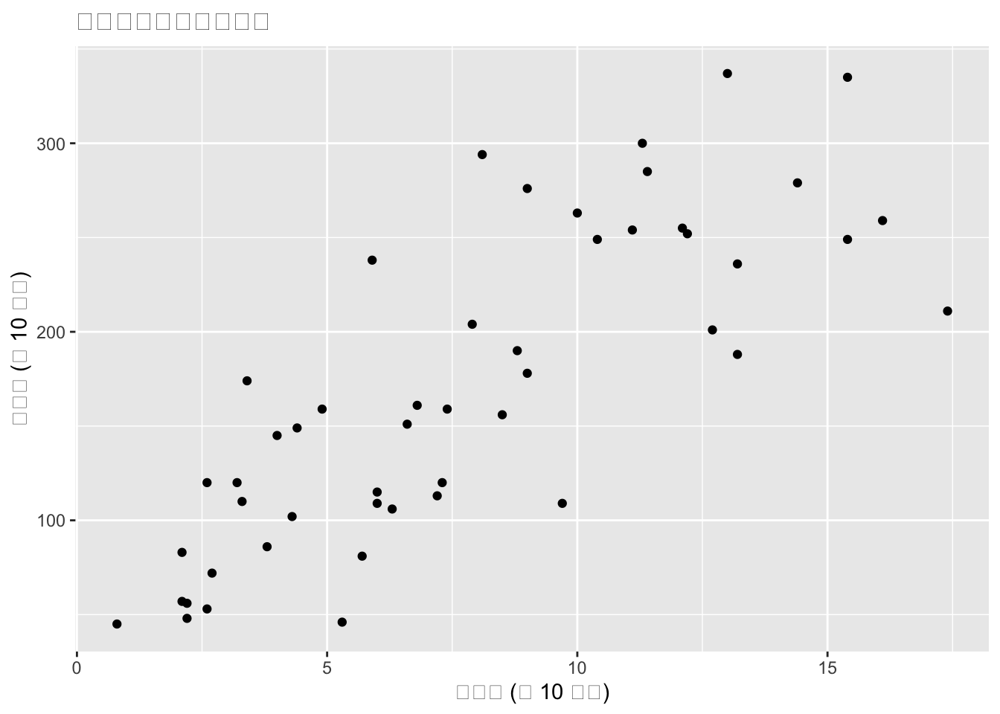
ggplot(USArrests, aes(x = Murder, y = Assault)) +
geom_point() +
labs(title = "谋杀率与攻击率的关系",
x = "谋杀率 (每 10 万人)",
y = "攻击率 (每 10 万人)")+
geom_smooth(method = "lm",linetype=2,
color="red")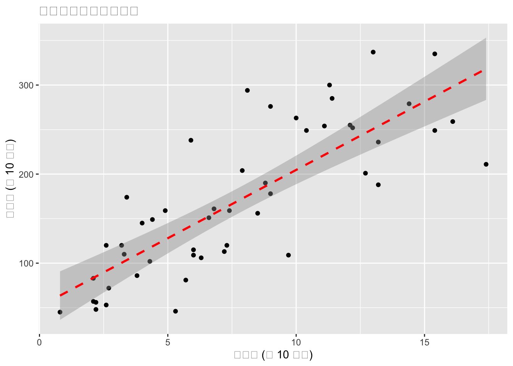
# 标准化数据
USArrests_scaled <- scale(USArrests)
library(pheatmap)
pheatmap(USArrests_scaled,
color = colorRampPalette(c("navy","white","firebrick3"))(10),fontsize = 7)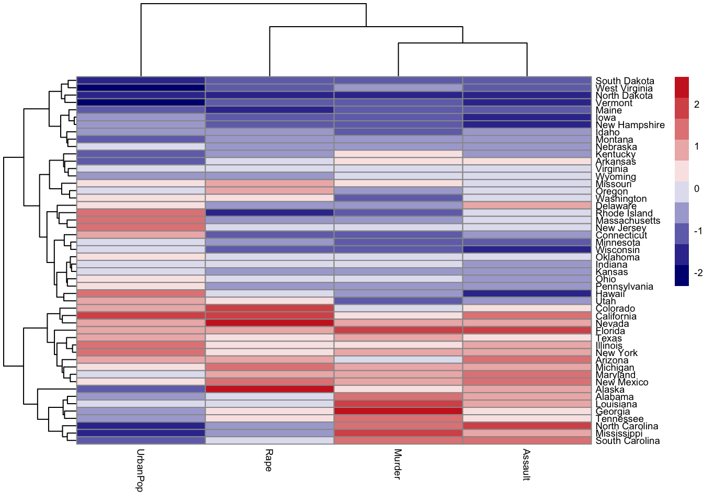
ggplot(USArrests,aes(x=Murder))+
geom_histogram(bins = 20,fill="deepskyblue",color="black")+
labs(x="谋杀率\n (每 10 万人)",y="频数")+
mytheme
ggplot(USArrests, aes(x = Murder, y = Assault)) +
geom_point(shape=19,color="royalblue") +
labs(title = "谋杀率与攻击率的关系",
x = "谋杀率 (每 10 万人)",
y = "攻击率 (每 10 万人)")+
mytheme
library(ggpubr)
ggplot(USArrests, aes(x = Murder, y = Assault)) +
geom_point() +
labs(title = "谋杀率与攻击率的关系",
x = "谋杀率 (每 10 万人)",
y = "攻击率 (每 10 万人)")+
geom_smooth(method = "lm",linetype=2,
color="red")+
stat_regline_equation()+
mytheme
library(pheatmap)
pheatmap(USArrests_scaled,
color = colorRampPalette(c("navy","white","firebrick3"))(10),fontsize = 7)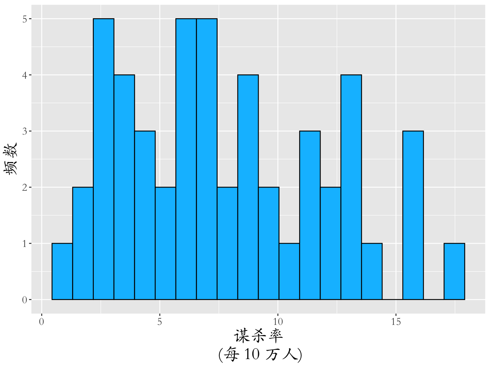
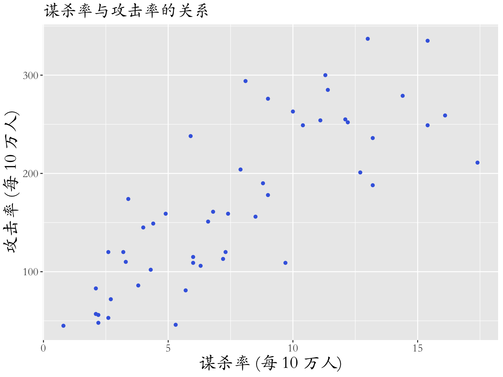
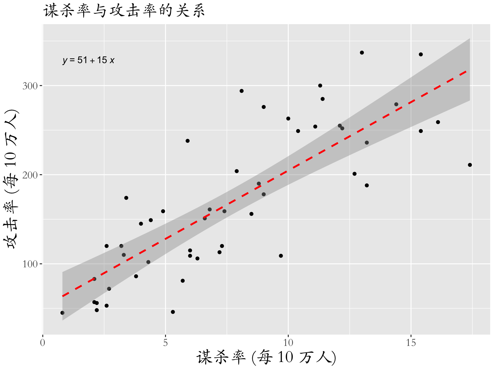
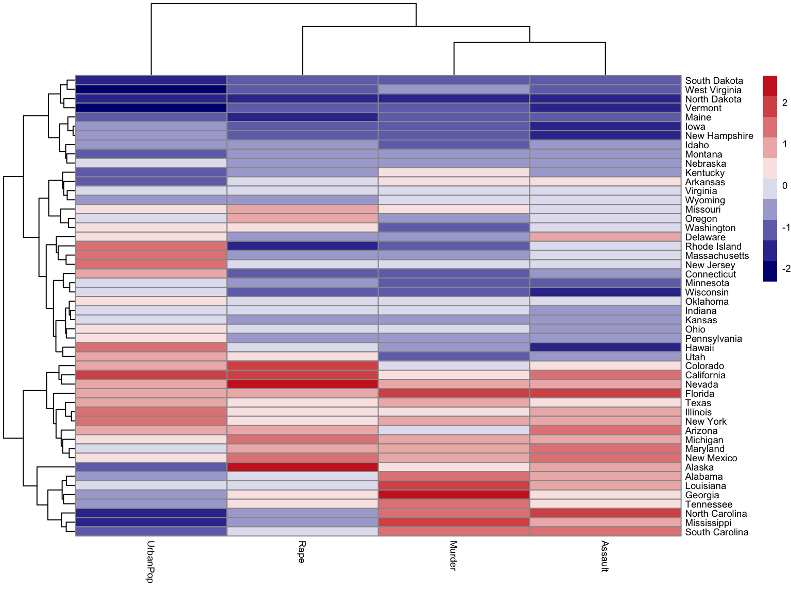
(1)生成序列10,40,70,100,…,280
seq(10,280,30) [1] 10 40 70 100 130 160 190 220 250 280(2)生成序列2,4,8,16,…,1024
2^seq(1,10,1) [1] 2 4 8 16 32 64 128 256 512 1024(3)构造如下所示2╳4矩阵sales,并设置行名和列名，表征不同销售人员的季度销售业绩，打印输出该矩阵。
| 第一季度 | 第二季度 | 第三季度 | 第四季度 | |
|---|---|---|---|---|
| 张三 | 50000 | 52000 | 55000 | 54000 |
| 李四 | 48000 | 49000 | 51000 | 50000 |
sales <- matrix(
c(50000, 52000, 55000, 54000,
48000, 49000, 51000, 50000),
nrow = 2,
byrow = TRUE,
dimnames = list(
c("张三", "李四"),
c("第一季度", "第二季度", "第三季度", "第四季度")
)
)(4)打印输出第(3)小题中sales矩阵中张三员工的第四季度销售业绩。
cat("张三第四季度的销售业绩为",sales[1,4])张三第四季度的销售业绩为 540002.创建数据框customers 模拟某银行的客户信息,并完成以下操作。
(1)创建表征客户信息的数据框 customers，数据如下： 客户姓名（Name）: “张三”, “李四”, “王五”, “赵六” 账户类型（AccountType）: “储蓄”, “支票”, “储蓄”, “支票” 余额（Balance）: 10000, 5000, 20000, 15000
# 创建数据框
customers <- data.frame(
Name = c("张三", "李四", "王五", "赵六"),
AccountType = c("储蓄", "支票", "储蓄", "支票"),
Balance = c(10000, 5000, 20000, 15000)
)
# 打印数据框
print(customers) Name AccountType Balance
1 张三 储蓄 10000
2 李四 支票 5000
3 王五 储蓄 20000
4 赵六 支票 15000(2)向数据框中添加一个新列银行卡号（CardID），并填入以下数据：“001”, “002”, “003”, “004”。
# 添加新列 CardID
customers$CardID <- c("001", "002", "003", "004")
# 打印数据框
print(customers) Name AccountType Balance CardID
1 张三 储蓄 10000 001
2 李四 支票 5000 002
3 王五 储蓄 20000 003
4 赵六 支票 15000 004(3)将账户类型（AccountType）列转换为因子，并查看因子水平。
# 将 AccountType 列转换为因子
customers$AccountType <- as.factor(customers$AccountType)
# 查看因子水平
levels(customers$AccountType)[1] "储蓄" "支票"(4)筛选余额（Balance）大于10000的客户的姓名并输出。
customers %>%
dplyr::filter(Balance >10000) %>%
select(Name) Name
1 王五
2 赵六3.请使用 runif() 函数生成均匀分布随机数模拟某电商网站每日访问量并完成以下操作。
(1)设置随机种子数为2024，使用 runif() 函数生成一个长度为10的向量，模拟该电商网站10天的每日访问量，访问量在500到5000之间。
# 设置随机种子数
set.seed(2024)
# 生成10天的每日访问量，访问量在500到5000之间
daily_visits <- round(runif(10, min = 500, max = 5000))
# 打印生成的访问量
print(daily_visits) [1] 4266 1944 3562 3642 2557 3656 2371 1864 4445 1036(2)计算该网站10天内访问量的平均值、最大值和最小值。
# 计算平均值
average_visits <- mean(daily_visits)
# 计算总和
sum_visits <- sum(daily_visits)
# 计算标准差
sd_visits <- min(daily_visits)
# 打印平均值、最大值和最小值
cat("平均访问量:", average_visits, "\n")
## 平均访问量: 2934.3
cat("访问量总和:", sum_visits, "\n")
## 访问量总和: 29343
cat("访问量标准差:", sd_visits, "\n")
## 访问量标准差: 1036(3)创建该电商访问量的频数分布表并显示对应区间的频数百分比，区间分段节点分别为0,1000,2000,3000,4000,5000。
library(DescTools)
visit_freq <- Freq(daily_visits,breaks = c(0,1000,2000,3000,4000,5000))
visit_freqvisit_f <- cut(daily_visits,breaks = c(0,1000,2000,3000,4000,5000))
visit_freq <- as.data.frame(table(visit_f))
visit_freq$perc <- visit_freq$Freq/sum(visit_freq$Freq)*100
colnames(visit_freq) <- c("分组","频数","频数百分比")
visit_freq 分组 频数 频数百分比
1 (0,1e+03] 0 0
2 (1e+03,2e+03] 3 30
3 (2e+03,3e+03] 2 20
4 (3e+03,4e+03] 3 30
5 (4e+03,5e+03] 2 201.根据data(B).RDada加载的Titanic_df数据集绘制以下图形，该数据集记录了泰坦尼克号沉船事件中乘客的存活情况，包括乘客的性别(Sex)、年龄(Age)、船舱等级(Class)和是否幸存(Survived)。请完成以下操作。 (1)加载数据集后，请创建一个条形图，展示泰坦尼克号事件中不同性别的乘客人数。图表的X轴代表性别（Sex），Y轴代表人数。
load("../Output/data(B).RData")ggplot(Titanic_df,aes(x=Sex))+
geom_bar()+
labs(y="人数")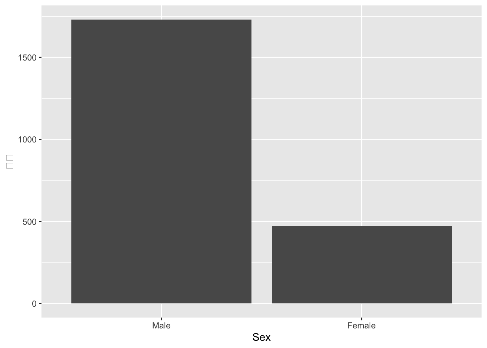
(2)将条形图的颜色依据设置为性别，并手动调整将条形图的填充颜色分别为”#E41A1C”和”#377EB8”。同时，将Y轴的标签设为“人数”，图表的标题设为“泰坦尼克号沉船事件中不同性别人数统计”。
ggplot(Titanic_df,aes(x=Sex,fill = Sex))+
geom_bar()+
labs(y="人数",
title = "泰坦尼克号沉船事件不同性别人数信息")+
scale_fill_manual(values = c("#E41A1C","#377EB8"))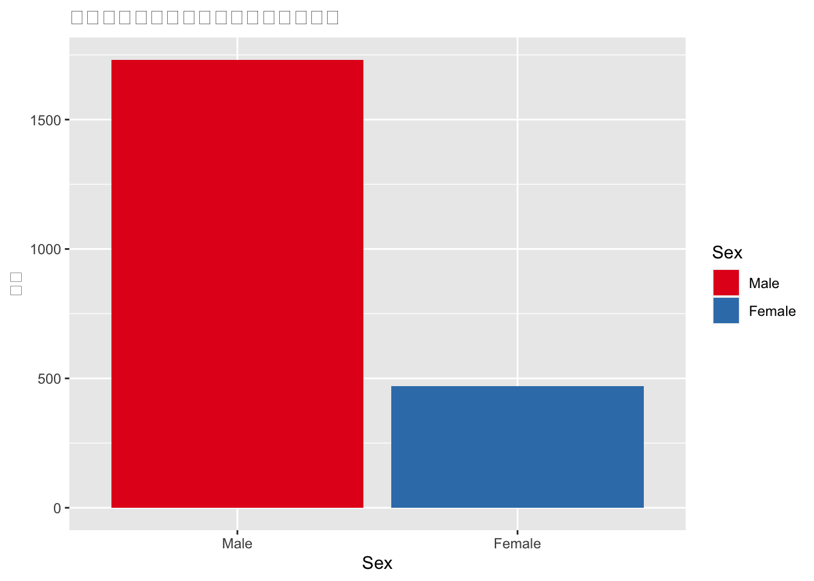
(3)绘制一个堆叠条形图，展示不同性别乘客的生存情况。X轴代表性别，条形图的颜色填充依据乘客的生存状态（是否存活）。
ggplot(Titanic_df,aes(x=Sex,fill = Survived))+
geom_bar()+
labs(y="人数")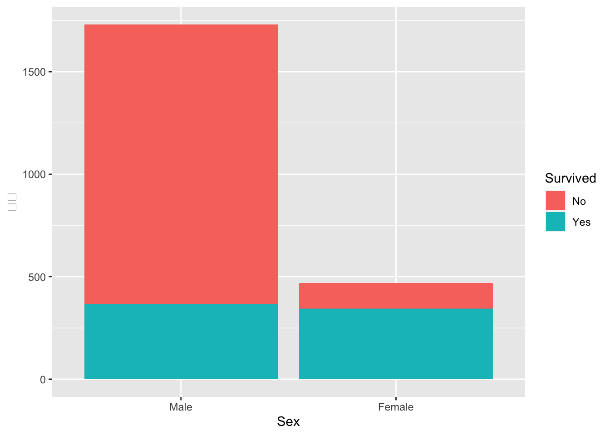
(4)绘制一个饼图，显示不同性别乘客占总人数的百分比。
library(ggiraphExtra)
ggPie(Titanic_df,aes(pies=Sex))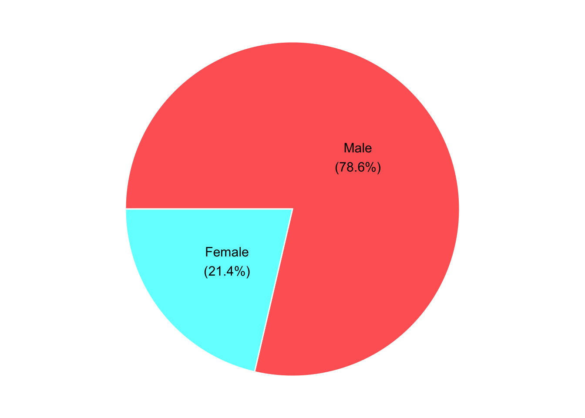
ggplot(Titanic_df,aes(x=Sex))+
geom_bar()+
labs(y="人数")+mytheme
ggplot(Titanic_df,aes(x=Sex,fill = Sex))+
geom_bar()+
labs(y="人数",
title = "泰坦尼克号沉船事件不同性别人数信息")+
scale_fill_manual(values = c("#E41A1C","#377EB8"))+mytheme
ggplot(Titanic_df,aes(x=Sex,fill = Survived))+
geom_bar()+
labs(y="人数")+mytheme
library(ggiraphExtra)
ggPie(Titanic_df,aes(pies=Sex))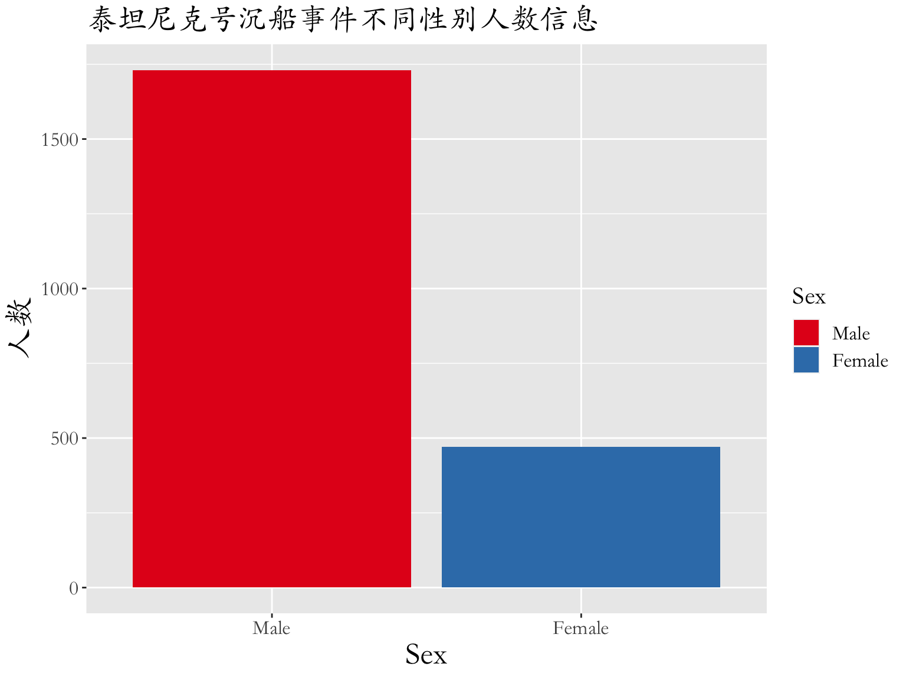
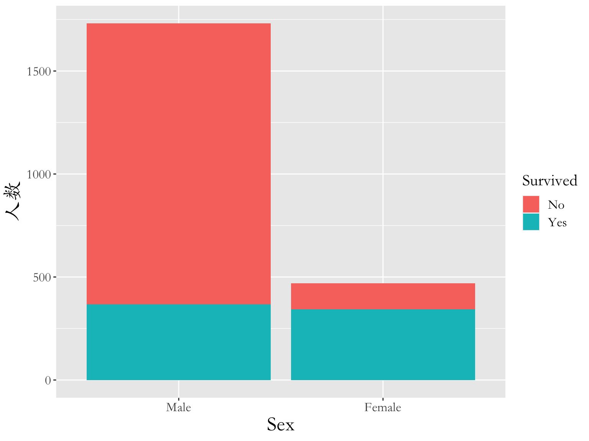
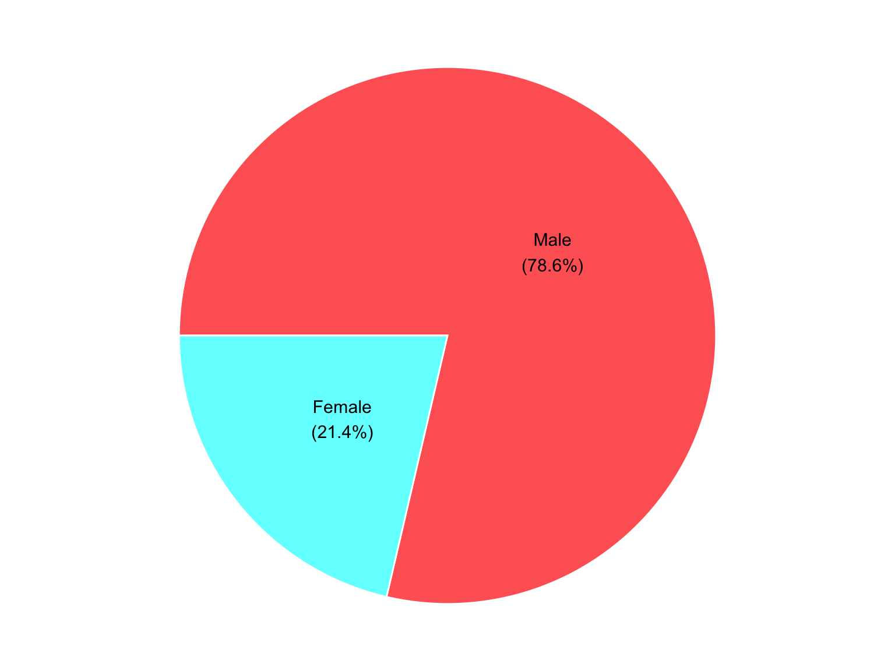
2.根据data(B).RDada加载的swiss数据集绘制以下图形，该数据集包含了1888年瑞士47个法语省份的社会经济指标，可用于研究不同地区的社会经济情况和特点。该数据集包含47个观测值，共计6个变量，包括：Fertility（生育率）、Agriculture（农业工作比例）、Examination（军队考试比例）、Education（教育水平比例）、Catholic（天主教徒比例）、Infant.Mortality（婴儿死亡率）。
(1)绘制基于生育率（Fertility）的直方图，将数据分成15组，设置填充颜色为 green4，边框颜色为 black，X轴标签为生育率，Y轴标签为频数,图表标题为1888年瑞士不同地区生育率分布情况。
(2)绘制基于Agriculture（农业工作比例）和Examination（军队考试比例）两个变量的散点图（X轴为农业工作比例，Y轴为军队考试比例），设置点的类型为三角形（pch=17），填充颜色为green4，X轴标签为农业工作比例，Y轴标签为军队考试比例。
(3)在散点图上添加线性回归线,设置回归线的颜色为firebrick，线条类型为虚线，并添加线性回归方程。
(4)使用 pheatmap 包的 pheatmap 函数绘制基于该数据集生育率（Fertility）、农业工作比例（Agriculture）、教育水平比例（Education）、婴儿死亡率（Infant.Mortality）四个变量的热图。
ggplot(swiss,aes(x=Fertility))+
geom_histogram(bins = 15,color="black",fill="green4")+
labs(x="生育率",y="频数")+
ggtitle("1888年瑞士不同地区生育率分布情况")ggplot(swiss,aes(x=Agriculture,y=Examination))+
geom_point(shape=17,color="green4")+
labs(x="农业工作比例",
y="军队考试比例")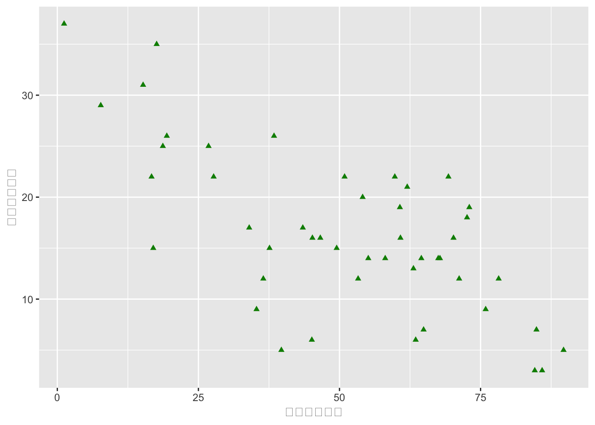
library(ggpubr)
ggplot(swiss,aes(x=Agriculture,y=Examination))+
geom_point(shape=17,color="green4")+
geom_smooth(method = "lm",color="firebrick",linetype=2)+
stat_regline_equation()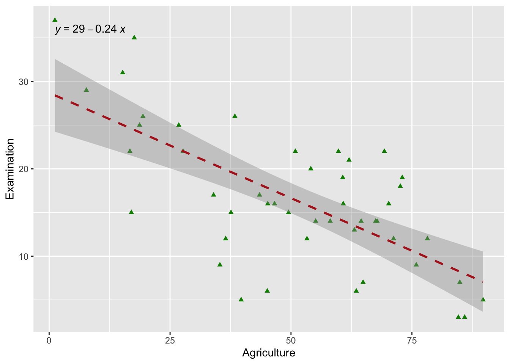
library(pheatmap)
pheatmap(swiss,scale = "column",
color = colorRampPalette(c("navy","white","firebrick3"))(10),fontsize = 7)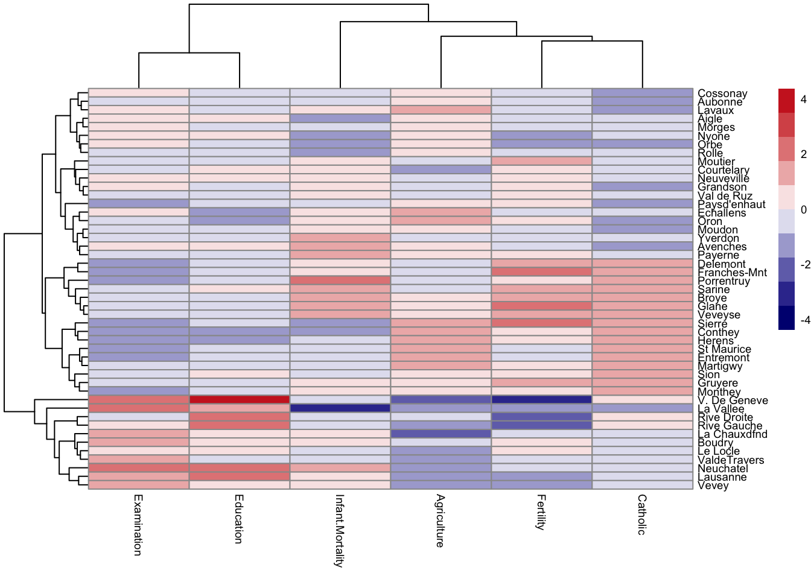
ggplot(swiss,aes(x=Fertility))+
geom_histogram(bins = 15,color="black",fill="green4")+
labs(x="生育率",y="频数")+
ggtitle("1888年瑞士不同地区生育率分布情况")+mytheme
ggplot(swiss,aes(x=Agriculture,y=Examination))+
geom_point(shape=17,color="green4")+
labs(x="农业工作比例",
y="军队考试比例")+
mytheme
library(ggpubr)
ggplot(swiss,aes(x=Agriculture,y=Examination))+
geom_point(shape=17,color="green4")+
geom_smooth(method = "lm",color="firebrick",linetype=2)+
stat_regline_equation()+
labs(x="农业工作比例",
y="军队考试比例")+
mytheme
library(pheatmap)
pheatmap(swiss,scale = "column",
color = colorRampPalette(c("navy","white","firebrick3"))(10),fontsize = 7)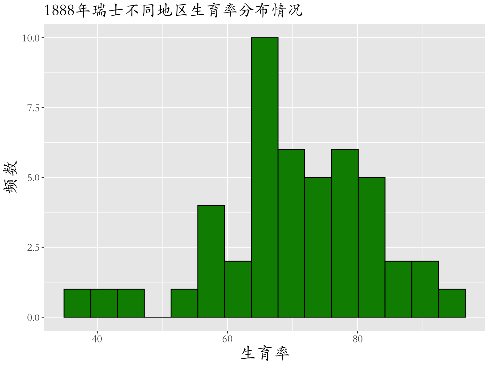
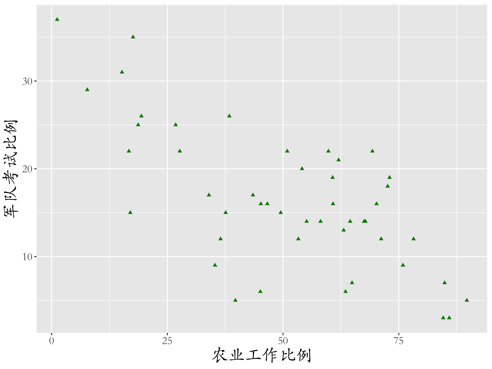
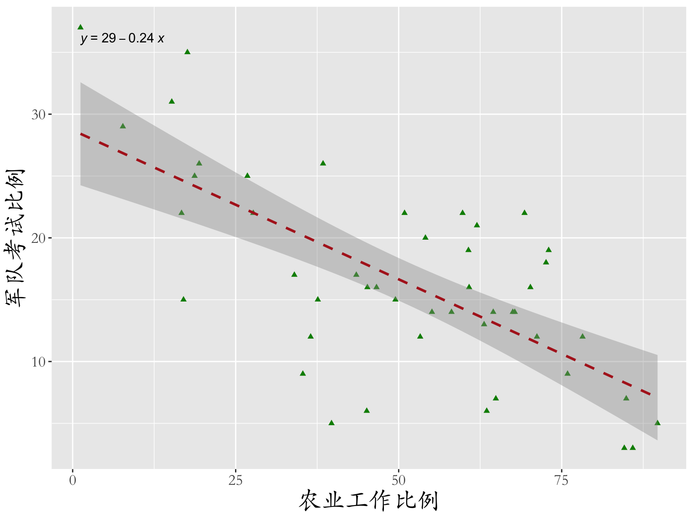
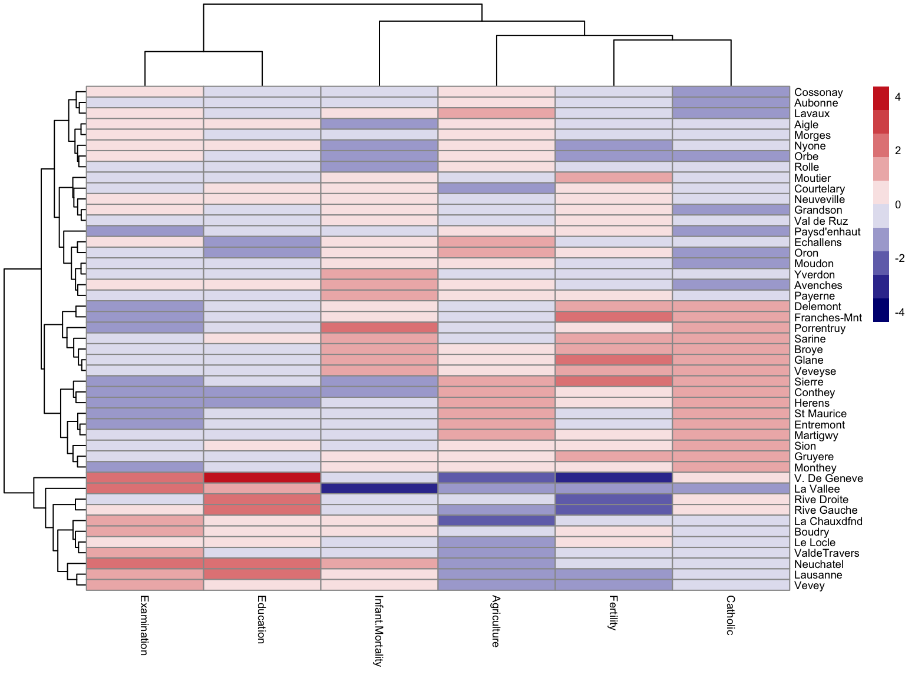
(1)生成序列1,4,9,16,25,…,100
seq(1,10,1)^2 [1] 1 4 9 16 25 36 49 64 81 100(2)生成序列100,300,500,700,…,2500
seq(100,2500,200) [1] 100 300 500 700 900 1100 1300 1500 1700 1900 2100 2300 2500(3)构造如下所示2╳4矩阵product,并设置行名和列名，表征商品的销售情况，打印输出该矩阵。
| 销售数量 | 单价 | 总销售额 | |
|---|---|---|---|
| 牛奶 | 150 | 5 | 750 |
| 面包 | 200 | 3 | 600 |
# 创建矩阵数据
product_data <- c(150, 5, 750,
200, 3, 600)
# 创建矩阵并设置行名和列名
product <- matrix(product_data,
nrow = 2,
byrow = TRUE,
dimnames = list(
c("牛奶", "面包"),
c("销售数量", "单价", "总销售额")
))
# 打印矩阵
print(product) 销售数量 单价 总销售额
牛奶 150 5 750
面包 200 3 600(4)打印输出第(3)小题中product矩阵中牛奶的单价。
cat("牛奶的销售单价为",product[1,2])牛奶的销售单价为 52.创建数据框 orders 模拟某餐厅的订单信息,并完成以下操作。
(1)创建表征订单信息的数据框 orders，数据如下: 订单编号（OrderID）: 1001, 1002, 1003, 1004 顾客姓名（CustomerName）: “张伟”, “李娜”, “王杰”, “赵静” 总金额（TotalAmount）: 200, 150, 300, 250
# 创建数据框
orders <- data.frame(
OrderID = c(1001, 1002, 1003, 1004),
CustomerName = c("张伟", "李娜", "王杰", "赵静"),
TotalAmount = c(200, 150, 300, 250)
)
# 打印数据框
print(orders) OrderID CustomerName TotalAmount
1 1001 张伟 200
2 1002 李娜 150
3 1003 王杰 300
4 1004 赵静 250(2)向数据框中添加一个新列订单日期（OrderDate），并填入以下数据：“2023-10-01”, “2023-10-02”, “2023-10-03”, “2023-10-04”。
# 添加新列 OrderDate
orders$OrderDate <- c("2023-10-01", "2023-10-02", "2023-10-03", "2023-10-04")
# 打印数据框
print(orders) OrderID CustomerName TotalAmount OrderDate
1 1001 张伟 200 2023-10-01
2 1002 李娜 150 2023-10-02
3 1003 王杰 300 2023-10-03
4 1004 赵静 250 2023-10-04(3)将订单日期（OrderDate）列转换为日期类型。
# 将 OrderDate 列转换为日期类型
orders$OrderDate <- as.Date(orders$OrderDate)
# 查看数据框结构
str(orders)'data.frame': 4 obs. of 4 variables:
$ OrderID : num 1001 1002 1003 1004
$ CustomerName: chr "张伟" "李娜" "王杰" "赵静"
$ TotalAmount : num 200 150 300 250
$ OrderDate : Date, format: "2023-10-01" "2023-10-02" ...(4)筛选总金额（TotalAmount）大于200的订单编号并输出订单编号。
orders %>%
dplyr::filter(TotalAmount>200) %>%
select(OrderID) OrderID
1 1003
2 10043.请使用rnorm() 函数生成正态分布随机数模拟某医院每日门诊患者数量并完成以下操作。
(1)设置随机种子数为2024，使用 rnorm() 函数生成一个长度为30的向量，模拟医院30天的每日门诊患者数量，均值为1000，标准差为20。
# 设置随机种子数
set.seed(2024)
# 生成30天的每日门诊患者数量，均值为1000，标准差为20
daily_patients <- rnorm(30, mean = 1000, sd = 100)
# 四舍五入保留整数
daily_patients <- round(daily_patients)
# 打印生成的每日门诊患者数量
print(daily_patients) [1] 1098 1047 989 979 1116 1129 1053 987 878 888 833 1047 1083 1029 673
[16] 985 907 1045 839 799 1114 1032 1104 979 1040 846 988 1068 794 989(2)计算该医院30天内门诊患者数量的最大值、最小值和总和。
# 计算最大值
max_patients <- max(daily_patients)
# 计算最小值
min_patients <- min(daily_patients)
# 计算总和
total_patients <- sum(daily_patients)
# 打印最大值、最小值和总和
cat("最大门诊患者数量:", max_patients, "\n")
## 最大门诊患者数量: 1129
cat("最小门诊患者数量:", min_patients, "\n")
## 最小门诊患者数量: 673
cat("门诊患者数量总和:", total_patients, "\n")
## 门诊患者数量总和: 29358(3)打印输出该医院门诊患者数量的频数分布表，并显示对应患者数量区间的频数百分比，区间分段节点分别为600,800,1000,1200。
# 设置区间分段节点
breaks <- c(600, 800, 1000,1200)
# 使用 cut 函数将患者数量分段
patient_categories <- cut(daily_patients, breaks = breaks, include.lowest = TRUE)
# 计算每个区间的频数
patient_freq_table <- as.data.frame(table(patient_categories))
# 计算每个区间的频数百分比
patient_freq_table$perc <- round(patient_freq_table$Freq/sum(patient_freq_table$Freq),4)*100
# 打印频数分布表
colnames(patient_freq_table) <- c("分组","频数","频数百分比")
patient_freq_table 分组 频数 频数百分比
1 [600,800] 3 10.00
2 (800,1e+03] 13 43.33
3 (1e+03,1.2e+03] 14 46.671.根据data(A).RDada加载的Survey数据集绘制以下图形，该数据集记录了对2000名消费者对网购情况的调查结果，字段包括性别、网购原因和满意度。请完成以下操作。
(1)加载数据集，请绘制基于网购原因的条形图，并设置x轴标签为网购原因,y轴标签为人数。
(2)条形图颜色填充依据为网购原因，请使用RColorBrewer包的Set1调色板设置条形图填充颜色,图表标题为2000名被调查者网购情况的普通条形图。
(3)请绘制并列条形图，显示不同性别调查者的网购原因,并设置x轴标签为网购原因，y轴标签为人数,条形图颜色填充依据为网购原因。
(4)请绘制基于网购原因消费者人数的饼图，显示不同网购原因的人数占总人数的百分比。
load("../Output/data(C).RData")# 饼图的绘制
library(dplyr)
df <- Survey %>% select(网购原因) %>% table() %>% as.data.frame() %>%
mutate(percent=Freq/sum(Freq),
plabel=scales::label_percent(accuracy = 0.01)(percent)) %>%
arrange(desc(percent))
p1 <- ggplot(df,aes(x="",y=percent,fill = 网购原因))+
geom_col()+
geom_text(aes(label = paste0(网购原因,"\n",plabel)),
position = position_stack(0.5))+
coord_polar("y")+
scale_fill_brewer(type = "div")+theme_void()+mytheme
p1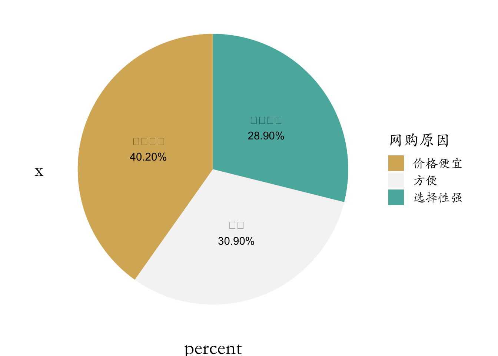
# (1)
ggplot(Survey,aes(x=网购原因))+
geom_bar()+
labs(x="网购原因",y="人数")+mytheme
library(RColorBrewer)
ggplot(Survey,aes(x=网购原因,fill=网购原因))+
geom_bar()+
labs(x="网购原因",y="人数",
title = "2000名被调查者网购情况的普通条形图")+
scale_fill_brewer(palette = "Set1")+mytheme
ggplot(Survey,aes(x=网购原因,fill=性别))+
geom_bar(position = "dodge")+
labs(x="网购原因",y="人数")+mytheme
p1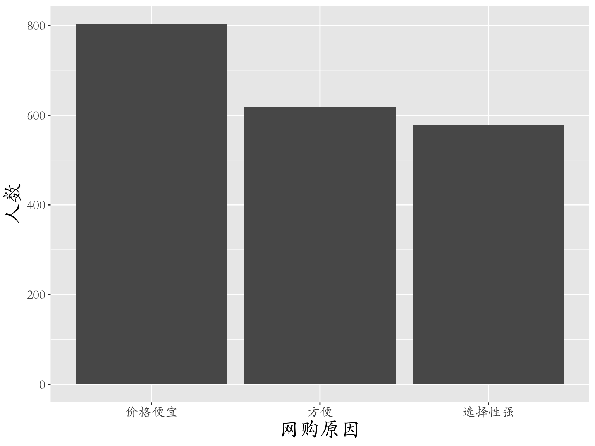
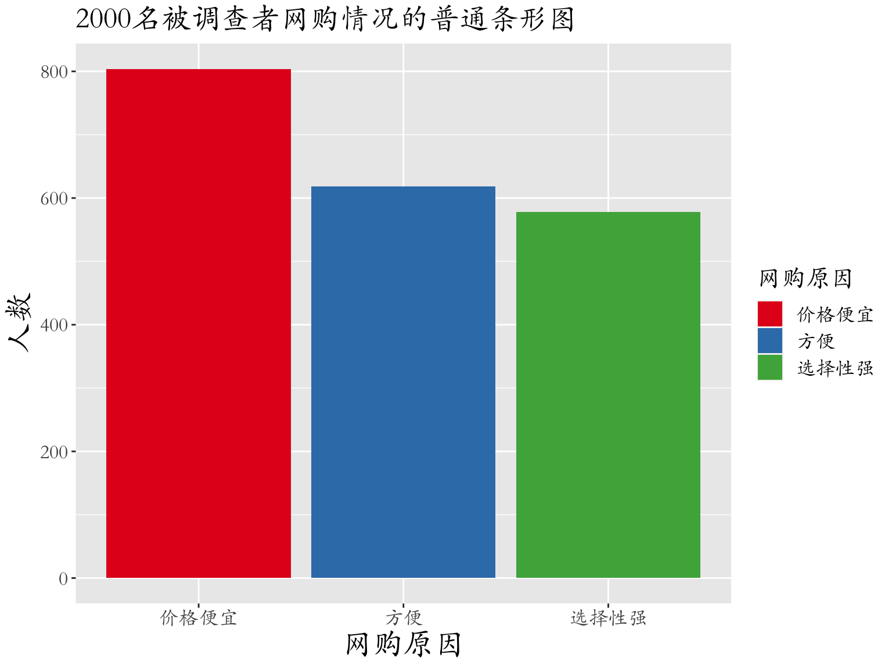
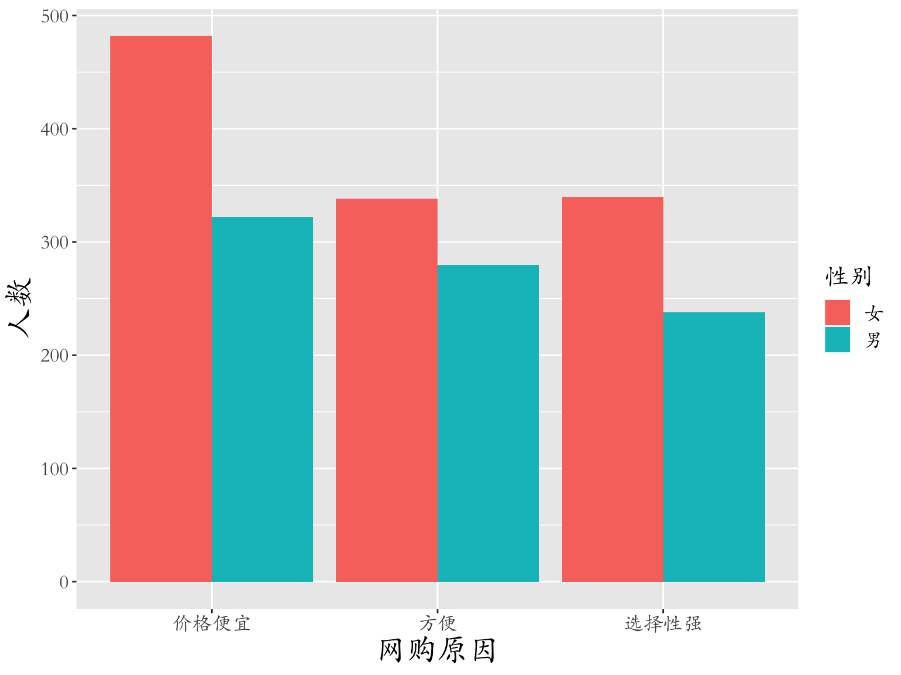
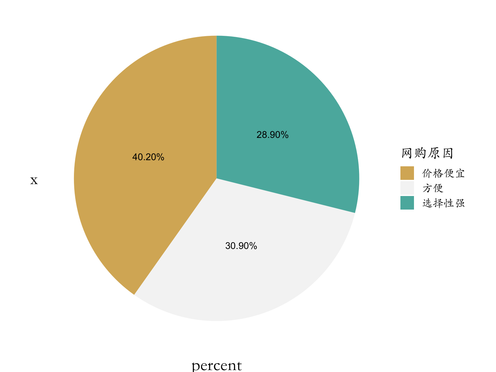
library(ggiraphExtra)
ggPie(Survey,aes(pies=网购原因))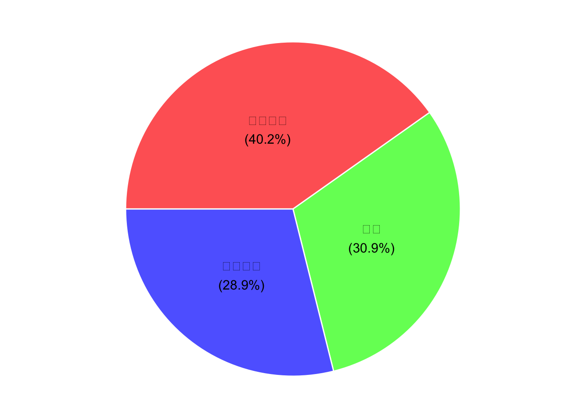
library(ggplot2)
ggplot(Stock,aes(x=总股本))+
geom_histogram(bins = 25,fill = "royalblue",color="black")+
labs(x="总股本",y="频数")+mytheme
ggplot(Stock,aes(x=总股本,y=每股收益))+
geom_point(shape=17,color="royalblue")+
labs(title = "总股本与每股收益的散点图")+mytheme
ggplot(Stock,aes(x=总股本,y=每股收益))+
geom_point(shape=17,color="royalblue")+
labs(title = "总股本与每股收益的散点图")+
geom_smooth(method = "lm",linetype=2,color="red")+mytheme
library(pheatmap)
pheatmap(Stock,scale = "column",show_rownames = F)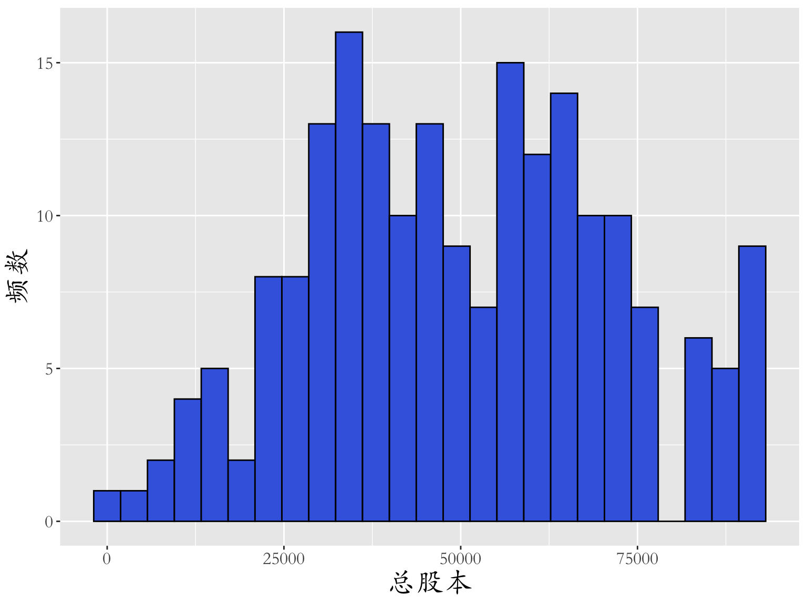
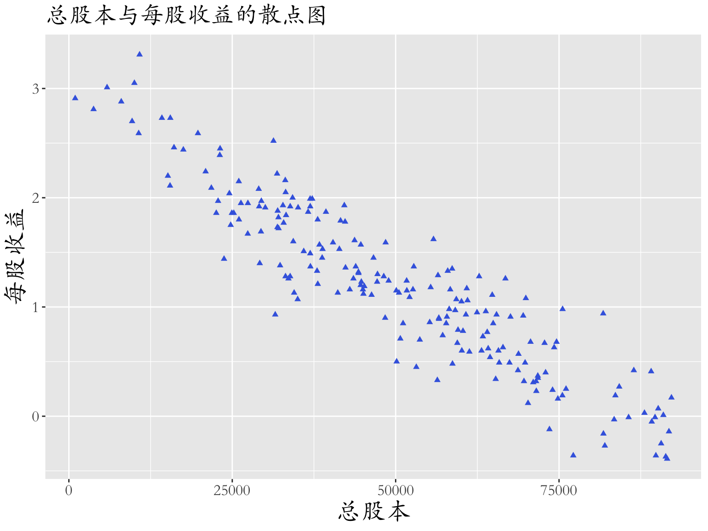
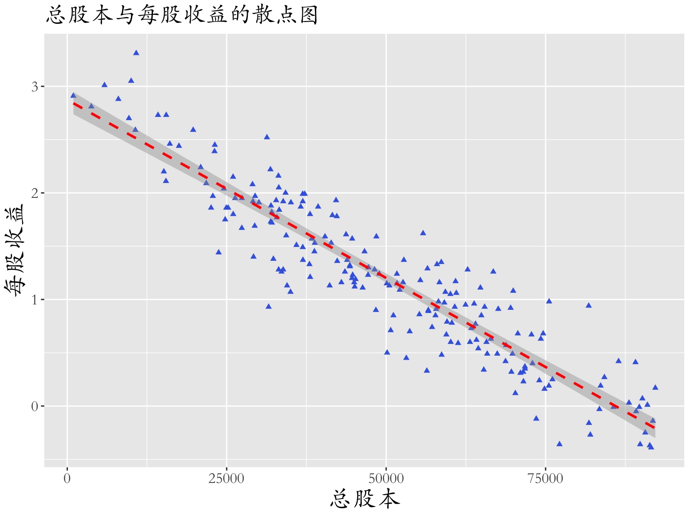
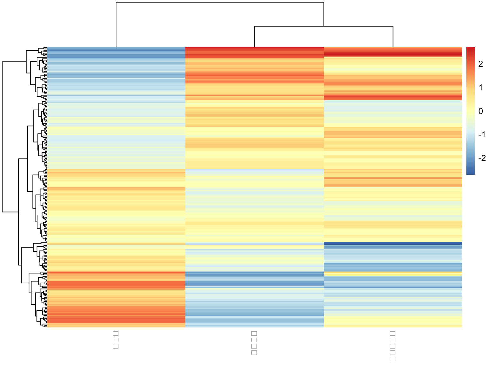
library(pheatmap)
pheatmap(Stock,scale = "column",show_rownames = F)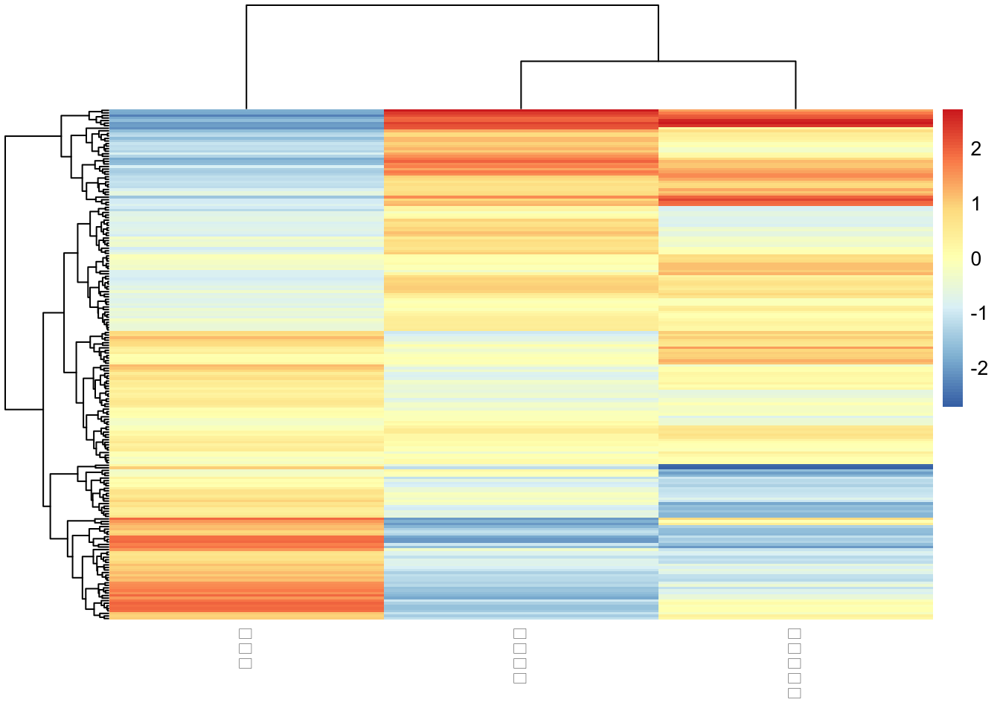